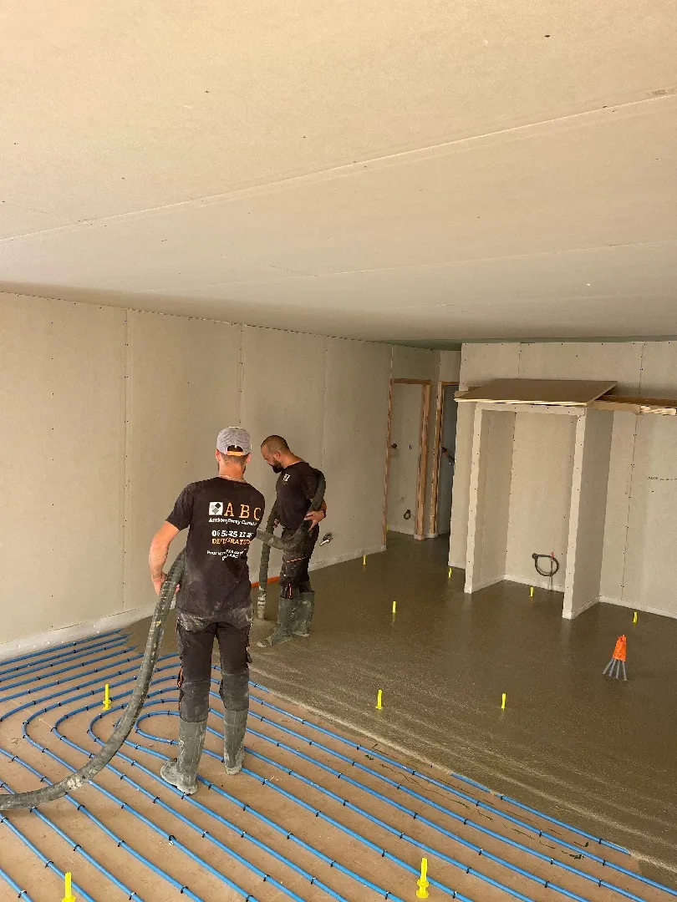
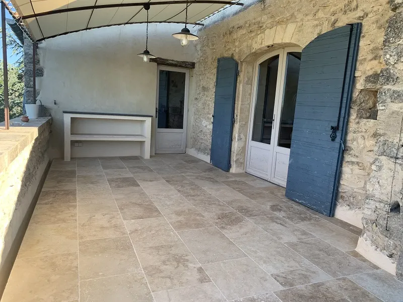

Vous rénovez une maison ancienne et le sol ressemble à une piste de bosses ? Bienvenue dans le quotidien de la rénovation en Provence. Entre les maisons en pierre du Luberon, les bastides de Forcalquier et les villages perchés des Alpes-de-Haute-Provence, on intervient régulièrement sur des sols qui n'ont jamais été plans. La bonne nouvelle : il existe une solution pour rattraper tout ça sans tout casser et sans perdre de hauteur sous plafond. C'est la chape fluide à faible épaisseur.
Le problème des sols anciens en Provence
Les maisons anciennes de la région ont souvent des sols en pierre, en tomettes ou en carrelage posé sur un lit de sable. Avec le temps, le sol travaille. Certaines zones s'affaissent, d'autres se soulèvent. On se retrouve avec des écarts de niveau de 2, 3, parfois 5 cm sur une même pièce. Ajoutez à ça les passages de portes entre deux pièces qui ne sont pas au même niveau, les pentes involontaires vers un mur, et vous comprenez le problème.
Poser du carrelage moderne (60x60, 60x120) sur un sol aussi irrégulier, c'est impossible sans correction préalable. Les grands formats exigent une planéité de 3 mm sous la règle de 2 m. Sur un sol ancien avec 3 cm d'écart, on en est très loin.
La solution classique serait de tout casser, creuser et refaire une dalle complète. C'est long, bruyant, cher, et souvent disproportionné par rapport au besoin réel. Dans la plupart des cas, il suffit de rattraper le niveau et d'obtenir un sol plan. C'est exactement ce que permettent le ragréage et la chape fluide mince.
Ragréage ou chape mince : quelle différence
Les deux produits corrigent les irrégularités d'un sol, mais ils ne jouent pas dans la même catégorie.
Le ragréage est un mortier autolissant que l'on coule manuellement au seau. On le verse sur le sol, on l'étale à la lisseuse ou au racloir, et il s'auto-nivelle sur quelques millimètres. L'épaisseur va de 3 à 10 mm. C'est la solution pour les petites irrégularités de surface : un sol un peu bosselé, des traces de colle d'un ancien revêtement, un léger creux localisé. Le ragréage sèche vite (24 à 48 h) et on peut carreler dessus directement.
Demander un devis pour votre rénovation
La chape fluide mince est une vraie chape, pompée depuis un camion-toupie, mais coulée en faible épaisseur : de 15 à 50 mm. Elle rattrape des écarts de niveau beaucoup plus importants que le ragréage. Sa fluidité lui permet de s'auto-niveler sur toute la surface de la pièce, avec une planéité finale au millimètre. Elle est aussi beaucoup plus résistante mécaniquement qu'un ragréage.
En résumé : si votre sol a des écarts de moins de 10 mm, le ragréage suffit. Au-delà de 10 mm, c'est la chape fluide mince qu'il faut.
La chape fluide à faible épaisseur
Comment ça marche
Le principe est le même qu'une chape fluide classique, mais en version fine. Le camion-toupie stationne devant la maison. La chape est pompée par un tuyau jusqu'à l'intérieur. On coule sur une épaisseur de 15 à 50 mm selon les besoins. Le produit est fluide, il s'écoule et se nivelle tout seul. Un passage à la barre de débullage chasse les bulles d'air. En 2 heures, une pièce de 30 m² est traitée.
On peut couler en chape ciment ou en chape anhydrite. En rénovation, la chape ciment est souvent privilégiée car elle sèche plus vite et supporte les pièces humides (salle de bain, cuisine). La chape anhydrite est recommandée si un plancher chauffant est prévu, grâce à sa conductivité thermique supérieure.
Avantages par rapport au ragréage
La chape fluide mince présente plusieurs avantages concrets par rapport au ragréage sur les chantiers de rénovation :
- Epaisseur plus importante : jusqu'à 50 mm contre 10 mm pour le ragréage. On rattrape des écarts de niveau que le ragréage ne peut pas corriger.
- Planéité supérieure : la fluidité du matériau garantit un résultat au millimètre sur toute la surface. Le ragréage, coulé manuellement, dépend davantage du geste du poseur.
- Résistance mécanique : une chape fluide de 30 mm résiste à des charges bien supérieures à un ragréage de 10 mm. Important si vous posez un carrelage en grand format ou si la pièce est très fréquentée.
- Compatible plancher chauffant : on peut intégrer des tubes de chauffage dans une chape mince de 30 à 50 mm. Le ragréage ne le permet pas.
- Rapidité : le coulage au camion-pompe est bien plus rapide que l'application manuelle du ragréage au seau.
Limites
La chape fluide mince a un coût plus élevé que le ragréage, car elle nécessite un camion-toupie et une pompe. Pour une petite surface (moins de 10 m²) avec de faibles écarts, le ragréage reste plus économique. La chape fluide se justifie à partir de 15 à 20 m² ou quand les écarts dépassent 10 mm.
Le délai de séchage est aussi plus long : 7 à 14 jours pour une chape ciment mince, 2 à 3 semaines pour l'anhydrite. Le ragréage est carrelable en 24 à 48 h.
Exemple concret : rénovation à Forcalquier
On a récemment rénové le sol d'une maison de village à Forcalquier. Maison en pierre du XVIIIe, deux pièces en enfilade au rez-de-chaussée. Le sol d'origine était en pierre irrégulière, avec des tomettes par endroits et un écart de niveau de 4 cm entre l'entrée et le fond de la pièce. Le client voulait un carrelage imitation travertin en 60x60 sur toute la surface.
La solution : on a posé un film de désolidarisation sur l'ancien sol en pierre pour éviter les remontées d'humidité. Puis on a coulé une chape fluide ciment en épaisseur variable, de 15 mm au point le plus haut à 55 mm au point le plus bas. Le coulage des deux pièces (42 m² au total) a pris une matinée. Après 12 jours de séchage et un contrôle d'humidité, on a posé le carrelage 60x60 en double encollage.
Résultat : un sol parfaitement plan, du carrelage grand format sans aucune lèvre, et un gain de temps considérable par rapport à la solution "tout casser et refaire la dalle". Le client a conservé la hauteur sous plafond (on n'a perdu que 15 à 55 mm, contre 12 à 15 cm pour une dalle neuve).
Combien ça coûte
Les prix varient selon la solution choisie et la surface à traiter.
Ragréage autolissant : entre 15 et 25 euros/m² fourni et posé, pour une épaisseur de 3 à 10 mm. C'est la solution la plus économique pour les petites corrections de planéité.
Chape fluide mince : entre 20 et 40 euros/m² fourni et posé, pour une épaisseur de 15 à 50 mm. Le prix au m² diminue avec la surface. Sur 60 m², on est plutôt autour de 22 à 28 euros/m². Sur 20 m², le coût de mobilisation du camion-pompe pèse davantage, et on se rapproche des 35 à 40 euros/m².
A ces prix s'ajoute le coût du revêtement final (carrelage, parquet) et de sa pose. Pour un chiffrage complet adapté à votre projet de rénovation, demandez un devis. On se déplace pour mesurer les écarts de niveau et vous proposer la meilleure solution.
Questions fréquentes
Peut-on couler une chape fluide mince sur des tomettes anciennes ?
Oui, à condition que les tomettes soient stables et bien adhérentes au support. On pose un primaire d'accrochage adapté sur les tomettes, puis on coule la chape fluide par-dessus. Si certaines tomettes bougent ou sonnent creux, on les retire et on rebouche avant le coulage. L'épaisseur minimale de 15 mm permet de ne pas trop surélever le sol.
Quelle est la différence entre ragréage et chape fluide mince ?
Le ragréage est un produit autolissant appliqué manuellement, limité à 3-10 mm d'épaisseur. Il corrige les petites irrégularités de surface. La chape fluide mince est pompée, va de 15 à 50 mm d'épaisseur, et peut rattraper des écarts de niveau importants. La chape fluide offre aussi une meilleure résistance mécanique et peut intégrer un plancher chauffant.
Combien de temps faut-il avant de poser le carrelage sur une chape mince ?
Pour une chape fluide ciment en faible épaisseur (15-30 mm), comptez 7 à 14 jours de séchage. Pour une chape anhydrite mince, le délai est de 2 à 3 semaines. On contrôle toujours le taux d'humidité résiduelle avant la pose : moins de 2 % pour le ciment, moins de 0,5 % pour l'anhydrite.
A lire aussi

Pourquoi votre carrelage fissure, et comment l'éviter
La chape est souvent la cause. Découvrez pourquoi et comment éviter les fissures.

Prix d'une chape liquide en 2026 : guide complet
Combien coûte une chape fluide ? Anhydrite ou ciment, les tarifs au m² et les facteurs de prix.

Rénover un sol : poser sur ancien carrelage ou tout enlever ?
Faut-il déposer l'ancien carrelage ou poser par-dessus ? Les critères pour faire le bon choix.